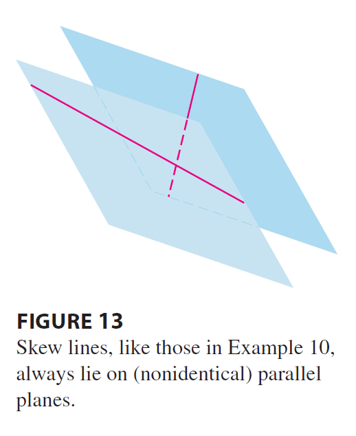

EXAMPLE 10 In Example 3 we showed that the lines \[ L_1: x = 1 + t \quad y = -2 + 3t \quad z = 4 - t \] \[ L_2: x = 2s \quad y = 3 + s \quad z = -3 + 4s \] are skew. Find the distance between them.

SOLUTION Since the two lines \(L_1\) and \(L_2\) are skew, they can be viewed as lying on two parallel planes \(P_1\) and \(P_2\). The distance between \(L_1\) and \(L_2\) is the same as the distance between \(P_1\) and \(P_2\), which can be computed as in Example 9. The common normal vector to both planes must be orthogonal to both \(\mathbf{v}_1 = \langle 1, 3, -1 \rangle\) (the direction of \(L_1\)) and \(\mathbf{v}_2 = \langle 2, 1, 4 \rangle\) (the direction of \(L_2\)). So a normal vector is \[ \mathbf{n} = \mathbf{v}_1 \times \mathbf{v}_2 = \begin{vmatrix} \mathbf{i} & \mathbf{j} & \mathbf{k} \\ 1 & 3 & -1 \\ 2 & 1 & 4 \end{vmatrix} = 13\mathbf{i} - 6\mathbf{j} - 5\mathbf{k} \] If we put \(s = 0\) in the equations of \(L_2\), we get the point \((0, 3, -3)\) on \(L_2\) and so an equation for \(P_2\) is \[ 13(x - 0) - 6(y - 3) - 5(z + 3) = 0 \quad \text{or} \quad 13x - 6y - 5z + 3 = 0 \] If we now set \(t = 0\) in the equations for \(L_1\), we get the point \((1, -2, 4)\) on \(P_1\). So the distance between \(L_1\) and \(L_2\) is the same as the distance from \((1, -2, 4)\) to \(13x - 6y - 5z + 3 = 0\). By Formula 9, this distance is \[ D = \frac{|13(1) - 6(-2) - 5(4) + 3|}{\sqrt{13^2 + (-6)^2 + (-5)^2}} = \frac{|13 + 12 - 20 + 3|}{\sqrt{169 + 36 + 25}} = \frac{8}{\sqrt{230}} \approx 0.53 \]